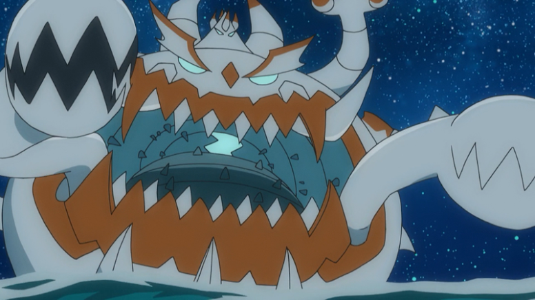

Pokémon Shiny no Anime

Assim como nos jogos da franquia Pokémon, os Pokémon Shiny (Pokémon Brilhante) são criaturas que possuem uma coloração diferente da padrão para a respectiva espécie. Dada a sua raridade, poucos exemplares de Pokémon Shiny apareceram no anime desde o surgimento da mecânica na saga correspondente aos jogos da 2ª Geração (Pokémon Gold, Silver e Crystal).
Entretanto, ainda que a existência dos Pokémon Shiny tenha surgido apenas na 2ª Geração dos jogos, antes já era possível encontrar Pokémon com cores diferentes exclusivas do anime. Estes Pokémon não são catalogados oficialmente como Pokémon Shiny, uma vez que sempre é levado em consideração o padrão de cor dos jogos da saga principal para dizer se o Pokémon é Shiny ou não.
Pokémon Shiny que apareceram no anime
Noctowl
Sendo o primeiro Pokémon de coloração rara que apareceu no anime, Noctowl Shiny é também um dos mais famosos, já que é um dos Pokémon de Ash Ketchum. Até hoje, é o único Pokémon Shiny capturado pelo protagonista.
Noctowl surgiu pela primeira vez no Episódio 154 - Cérebro de Ave! da série original, tendo participando das Conferências de Prata e do Lírio da Ilha Valley no decorrer das séries. Atualmente vive no Laboratório do Professor Carvalho, em Pallet, junto com os demais Pokémon do Ash. Sua última aparição foi no Episódio 142 - O Sonho Continua da série Branco e Preto.
Shuckle
A versão Shiny de Shuckle foi vista no Episódio 172 - O Remédio Bombástico! da série original. Neste episódio, é dito que o Shuckle de casco azul tem uma capacidade de produzir um suco especial utilizado na fabricação de um medicamento capaz de garantir que os Pokémon que o bebem obedeçam a seus treinadores.
Gyarados e Mega Gyarados
Um dos Pokémon Shiny mais famosos dos jogos da saga principal de Pokémon também fez sua aparição no anime. O Gyarados Vermelho surgiu pela primeira vez no Episódio 235 - Evolução, Eis a Questão!, em que fazia parte de um experimento da Equipe Rocket. Contudo, pelo fato de o Pokémon ter sido forçado a evoluir, ele não conseguiu completar a evolução, permanecendo na cor vermelha de quando ainda era um Magikarp - e se torna um Pokémon furioso.O Campeão Lance, então, batalha contra o Pokémon para fazê-lo se acalmar e acaba capturando-o, prometendo a Ash que cuidará do Pokémon. A última aparição do Gyarados Shiny de Lance foi no Episódio 1109 - Batalha de Titãs!, em Jornadas Pokémon, quando Lance desafia Leon, o Campeão da Região de Galar e Monarca do Campeonato da Coroação Mundial.
Outro Gyarados Shiny que surgiu no anime foi visto sendo utilizado por Lysandre, líder da Equipe Flare, em sua batalha contra Ash e Alain no Episódio 942 - Afastando-se dos seus Sonhos! da série XY. Porém, este aqui foi capaz de megaevoluir.
Magneton
Um Magneton Shiny foi visto no Episódio 270 - Essa dá Empate! da série original. Ele foi usado por Jackson em sua batalha contra Ash na Conferência da Liga de Prata. Magneton Shiny foi capaz de derrotar Pikachu e Cyndaquill de Ash, mas acabou perdendo para Bulbasaur.
Swellow
A Líder de Ginásio do tipo Voador da região de Hoenn, Winona, possui um Swellow Shiny. Ele foi visto no Episódio 361 - Batalha de Ginásio nas Alturas! na série Geração Avançada. Na batalha pela Insígnia do Ginásio, Swellow derrota o Grovyle de Ash, mas perde para o próprio Swellow do treinador de Pallet.
Magikarp
No Episódio 368 - Dia do Julgamento! (Geração Avançada), um Magikarp Shiny foi mostrado em um flashback do personagem Jimmy, em que ele o troca por um Charmeleon.
Outro Magikarp Shiny também aparece no Episódio 828 - Atrás do Ouro!, da série Pokémon XY. Outro diferencial é que ele é maior que os Magikarp padrão. Aparece também um Magikarp Shiny na primeira parte do Episódio 1123 - Nade, Pule e Conquiste a Vitória!, de Jornadas Pokémon.
Donphan
Uma Donphan Shiny foi vista no Episódio 390 - Expectativas de Encontro!, da série Geração Avançada. Neste episódio, vários Donphan machos estão tentando chamar atenção da Donphan Shiny, mas ela acaba ficando com um de sua espécie que estava machucado.
Dustox
Na série Diamante e Pérola, Episódio 541 - Destinos Cruzados!, a Dustox de Jessie acaba se apaixonando por um Dustox Shiny que pertencia ao Austin. No final, Jessie decide que seu Pokémon precisa viver seu grande amor e o solta, destruindo sua Poké Bola para que o Pokémon fique livre.
Metagross e Mega Metagross
A fim de impressionar Giovanni, o trio da Equipe Rocket decide capturar um Metagross Shiny. Esse evento aconteceu no Episódio 585 - Macarrão? Tô Fora! da série Diamante e Pérola.
Além deste, outro Metagross Shiny foi visto no Especial da Mega Evolução II, em que o Campeão da região de Hoenn, Steven, utilizou um em uma batalha contra Alain e seu Mega Charizard X. O Metagross de Steven é capaz de megaevoluir.
Pichu
Um Pichu Shiny fez uma pequena aparição no quarto encerramento japonês da série Diamante e Pérola (Episódios 124 ao 144) correndo junto com a Pichu de Orelha Cortada do Filme 12 - Arceus e a Joia da Vida. O Pichu Shiny também é conhecido como Pichu com cor de Pikachu.
Ditto
A personagem Narissa possui um Ditto Shiny que é chamado de Ditto 2. Ele faz uma aparição no Episódio 641 - Lidando com uma Fera em Dose Dupla! da série Diamante e Pérola, em que acaba enfrentando e sendo derrotado pelo Infernape de Ash.
Raikou, Entei e Suicune
O trio de Feras Lendárias aparece em suas formas Shiny no 13º Filme da franquia Pokémon, Zoroark - Mestre das Ilusões.
Ariados
O Ariados Shiny apareceu no primeiro especial da série Pokémon Diamante e Pérola (Episódio 660 - Dawn - Partindo em uma Nova Jornada!), em que era líder de um enxame de Ariados. Ele acabou sendo derrotado pelo Quilava de Dawn.
Hydreigon
No 14º Filme da franquia, Pokémon Branco - Victini e Zekrom, a personagem Carlita possui um Hydreigon Shiny.
Golurk
O Golurk Shiny de Joanita é visto no 14º Filme da franquia, Pokémon Preto - Victini e Reshiram. Sua chama, ao voar, é azul.
Onix
No Episódio 748 - Expedição na Ilha Onix!, da série Branco e Preto, Ash e seus amigos (incluindo Dawn, que estava de passagem por Unova) visitam a Ilha Onix após ouvirem rumores de um espécime raro que habita no local. Esse Onix raro era um Pokémon Shiny.
Em Jornadas Pokémon, Episódio 1111 - Batalha de Reide nas Ruínas!, o personagem Cássio Brilho acaba mostrando seu Pokédex que contém um Onix Shiny capturado.
Genesect
Nos eventos do Filme 16 - Genesect e a Lenda Revelada, a Equipe Plasma consegue reviver cinco Pokémon pré-históricos na forma de Genesect, sendo um deles vermelho. O Gensect Shiny também surge em flashback no Episódio 780 - Meowth, Colress e a Equipe Rivalidade!, da série Branco e Preto.
Druddigon
Um Druddigon Shiny aparece na série Pokémon Branco e Preto no Episódio 797 - Um Pokémon de uma Cor Diferente! Aqui, a Líder de Ginásio do tipo Dragão da região de Johto, Clair, acalma o Druddigon Shiny após ele ser atacado pela Equipe Rocket. No final, ela acaba capturando o Pokémon.
Hawlucha
No Episódio 858 - Quando Luz e Sombra Colidem!, da série XY, surge um Hawlucha Shiny, que fazia parte de um grupo de teatro itinerante, tornando-se rival do Hawlucha de Ash.
Rayquaza e Mega Rayquaza
No 18º filme da franquia, Hoopa e o Duelo Lendário, o Pokémon Mítico acaba convocando um Rayquaza Shiny para defender a cidade que estava sendo atacada por outros Pokémon Lendários. Este Rayquaza Shiny foi capaz de megaevoluir.
Dragonair
No Episódio 918 - As Escolhas da Classe Mestra!, de Pokémon a Série: XY, a personagem Amelia utiliza um Dragonair Shiny na sua apresentação na Performance Pokémon da cidade de Fleurrh.
Phantump
Um pequeno Phantump Shiny acaba se perdendo de seus amigos no Episódio 926 - Fazendo Amigos e Influenciando Vilões!, da série XY. Bonnie e seus amigos, então, decidem ajudá-lo.
Pikachu
O Pikachu Shiny que aparece no anime é o chefe de um bando de Pikachu que vive no Vale Pikachu, em Alola. Sua aparição ocorreu no Episódio 1042 - Um Montão de Pikachu!, da série Sol e Lua.
Gengar e Mega Gengar
Pokémon principal do personagem Alva, Gengar Shiny, bem como sua forma mega evoluída, aparece no 19º Filme da franquia, Volcanion e a Maravilha Mecânica.
Gardevoir e Mega Gardevoir
Assim como Gengar, a forma Shiny de Gardevoir e sua mega evolução aparecem no 19º Filme da franquia, Volcanion e a Maravilha Mecânica. É o Pokémon principal da personagem Kimia.
Charjabug e Vikavolt
Dado a Horácio pelo seu pai, o Charjabug Shiny é visto pela primeira vez no Episódio 992 - Uma Corrida Eletrizante!, em Pokémon a Série: Sol e Lua, em que o utiliza numa corrida de carros movido a eletricidade de Charjabug. No entanto, durante a corrida, Horácio acaba esgotando a energia e perde para o Charjabug de Chris.
Mais tarde, no Episódio 1057 - Pesquisa em Evolução!, da série Sol e Lua, Horácio leva seu Charjabug para o Grande Cânio de Poni para evolui-lo em Vikavolt.
Mimikyu
A Mimikyu de Acerola é um Pokémon Shiny e foi visto pela primeira vez no Episódio 1024 - Por Que Não me dá uma Pulseira Z? na série Sol e Lua. Além disso, é dito que esta Mimikyu é um fantasma, já que flutua pelo ar e não pode ser filmada ou fotografada.
Tapu Koko
Tapu Koko em sua forma Shiny foi visto na série Pokémon Sol e Lua no Episódio 1051 - Enfrentando a Criatura Interior!, em que ajudou a sua contraparte de cor padrão a abrir uma fenda que levaria Ash e Pikachu para as Ruínas Ultra.
Magearna
Um Magearna Shiny foi encontrado por Mauro numa loja de antiguidades. Ele então planejou reativá-lo para que pudesse fazer companhia à sua filha, Lílian, mas acabou desaparecendo antes de conseguir.
O Pokémon foi encontrado pela própria Lílian, que decidiu restaurá-lo. Ao reagir às emoções da Lílian, Magearna acorda e revela a localização de Mauro, levando Lílian, Gladion e Samina ao encontro de seu pai.
Magearna Shiny aparece pela primeira vez no anime no Episódio 1067 - A Princesa Secreta!, em Pokémon a Série: Sol e Lua.
Guzzlord
Dois Guzzlord Shiny aparecem no Episódio 1091 - Confronto de Movimentos Z!, da série Sol e Lua, em que causam problemas na cerimônia de encerramento da Conferência da Liga Manalo.
Psyduck
O primeiro Pokémon de Cássio Brilho foi um Psyduck Shiny, o que o motivou a iniciar uma jornada para capturar todos os tipos de Pokémon Shiny. Ele surge no Episódio 1111 - Batalha de Reide nas Ruínas!, em Jornadas Pokémon.
Swinub, Slakoth e Bagon
Além de Onix e Psyduck, também no 1111 - Batalha de Reide nas Ruínas! de Jornadas Pokémon, Cássio Brilho mostra no seu Pokédex que possui outros três Pokémon Shiny: Swinub, Slakoth e Bagon.
Celebi
Um Celebi Shiny é visto no final do Episódio 1129 - Uma Viagem pelo Tempo! de Jornadas Pokémon e também no 23º Filme da franquia, Segredos da Selva.
Larvesta e Volcarona
No Episódio 1177 - Missão de Teste! As Escamas Douradas de Volcarona!, Ash e Goh visitam novamente a região de Unova. Dentro de uma caverna, eles se deparam com um caçador que tenta roubar ovos de Larvesta. Os dois aventureiros até tentam impedir o caçador, mas quem leva o título de herói do dia é um Larvesta Shiny que aparece cuspindo fogo em todos pra proteger os ovos, e logo após evolui para um lindo Volcarona Shiny.
Voltorb

Um dos Pokémon que mais se destacam quando o assunto é a diferença entre sua versão normal e shiny, apareceu no episódio 1178 - Um Confronto?! Pokemaníacos Azuis! Logo no início do episódio, Ash e Goh aparecem correndo atrás de um Voltorb Shiny e aparentam saber muito bem da raridade do Pokémon. Após quase trombarem em Chloe, Voltorb tenta saltar sobre ela, mas Goh lança uma Poké Bola e captura seu primeiro Pokémon shiny.
Nihilego
Um Nihilego Brilhante foi descoberto no episódio 1208 - Lílian e Mauro: Uma Reunião na Tundra!, em Crown Tundra na região de Galar. Este Nihilego foi responsável por resgatar Mauro, pai de Lílian e Gladio, e esposo de Samina, quando ele caiu em uma Ultrafenda Espacial. Com as memórias confusas, Nihilego assumiu a forma de Lílian, em uma ilusão, e passou a viver com Mauro como sua filha. No episódio, Lílian, Gladio e Samina finalmente encontram Mauro e descobrem o que aconteceu com ele depois do seu desaparecimento. Com a situação resolvida, a família convida Nihilego para viver com eles. No episódio seguinte, 1209 - Um Retorno Triunfante! O Campeão de Alola!, Gladio usa o Nihilego Brilhante no Battle Royal de Alola.